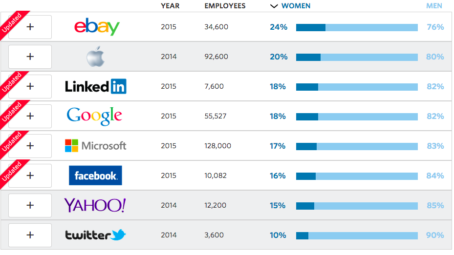

U2.W4: Cultural Blog: Issues in Tech
Dev Bootcamp Blog
July 7th, 2015
Diversity in any area could use some awareness and improvement. In the tech world, companies are attemping to raise their percentage of women in the workforce. For example, Dev Bootcamp offers a $500 scholarship for women or minorities. Google offers generous maternity leave and have created resource groups for women and minorities. They have also said that they will invest $150 million to attract more women and minorities into the tech world. Google also plans to partner with Disney to create a cartoon that embraces computer science and shines a positive light on girls who code and are interested in coding. Apple has also recently donated $50 million to the National Center for Women and Information Technology to encourage more women and people of color to study computer science.
The chart below displays a company, their employees for the given year, and the percentage of women vs. men. 
To view more details about this chart press here In New York City, there are various groups which support the growth of women in tech, such as Girl Develop It and Women Who Code.
Although adding women and minorities to the workforce will be a step in the right direction, the real changes need to come from inside the company. According to the Level Playing Field Institute, more than 2 million professionals leave their jobs each year due to small comments, whispered jokes, and not-so-funny e-mails. In addition, many young women are discouraged from the tech industry from the "failure to groom more women for top positions," according to the Anita Borg Institute.
The tech industry is slowly changing and growing. Women and minorites are slowing being integrated into the workforce. Although companies are doing more to get women and minorities involved, the real change will come from the inside. Companies need to help mold women and minorities for top positions and provide resources to make them feel welcome.
You can check me out at: